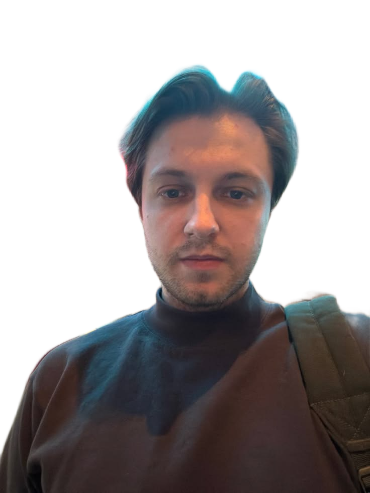

Максим Шабанов — главный голос русского интернета, стример-миллионник и ироничный исполнитель, которого обожают за искренность и мемные тексты.
Это не просто парень с гитарой. Это человек, который собирает клубы и концертные залы по всей стране, потому что его аудитория выросла на стримах и хочет слышать хиты вживую.